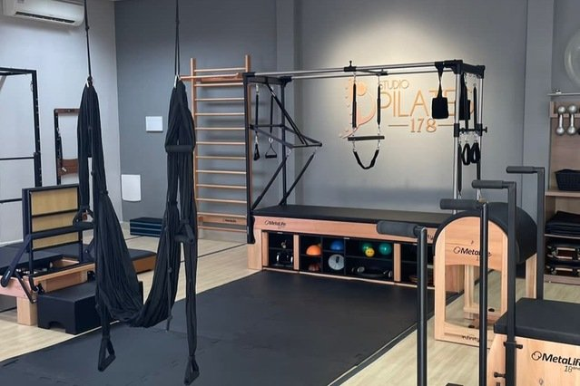
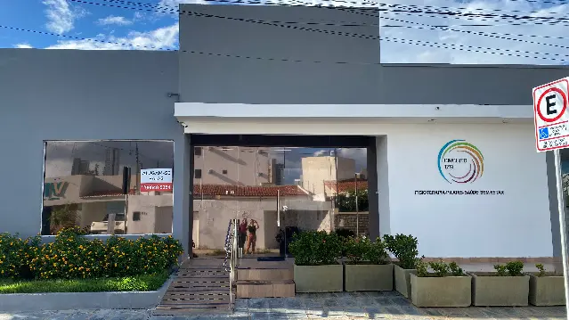
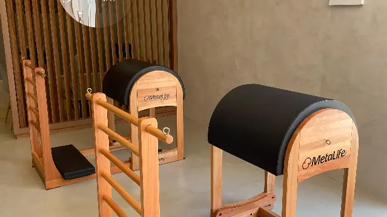

Pilates
Uma prática com aparelhos e acompanhamento. Converse com nossa equipe para conhecer as aulas e a proposta do Studio 178.
Conversar sobre pilatesPilates e Fisioterapia em Petrolina
Pilates, fisioterapia e reabilitação funcional em um espaço para cuidar de você. Conte o que procura e vamos conversar sobre o seu atendimento.

Um encontro com o seu corpo. Um cuidado para a sua rotina.
Conheça nossos atendimentos e fale com a gente para consultar a avaliação e os horários disponíveis.
Uma prática com aparelhos e acompanhamento. Converse com nossa equipe para conhecer as aulas e a proposta do Studio 178.
Conversar sobre pilatesConte suas necessidades e tire suas dúvidas antes de começar. Nossa equipe orienta você sobre a avaliação e o atendimento.
Conversar sobre fisioterapiaUm acompanhamento que começa com uma conversa sobre você. Consulte as possibilidades de atendimento no Studio.
Conversar sobre reabilitação funcional
Na Rua Irmã Jerônima, no Centro de Petrolina, preparamos nosso espaço com salas climatizadas e aparelhos de Pilates. Será um prazer receber você.
Combine sua visita
Petrolina/PE
Fale com a nossa equipe para tirar dúvidas e consultar os horários de atendimento.
Acompanhe nosso InstagramPara agendar, converse com a gente pelo WhatsApp.
Falar pelo WhatsAppUse o botão do WhatsApp e conte o que procura. Nossa equipe apresenta as possibilidades de atendimento e consulta os horários com você.
Sim. Fale com a gente para conhecer o espaço, os atendimentos e como funciona a avaliação.
Rua Irmã Jerônima, 178, Centro, Petrolina/PE, CEP 56304-130. Acesse o link de rota nesta página para abrir o endereço no Google Maps.